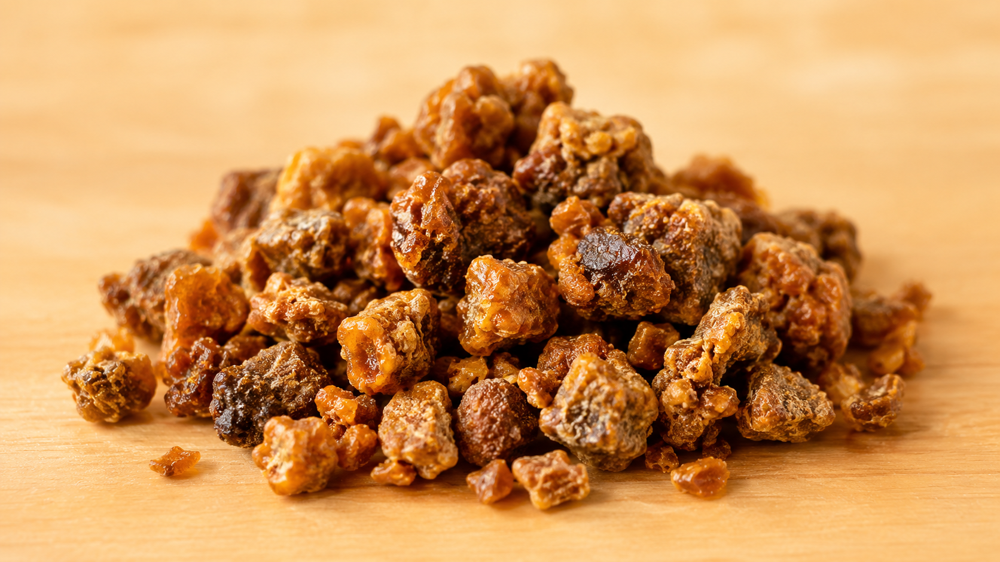
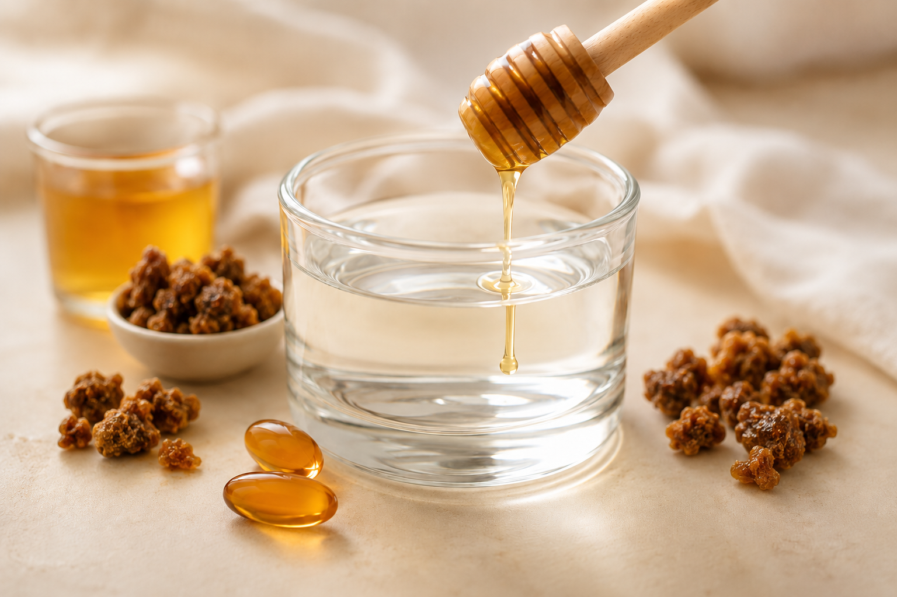
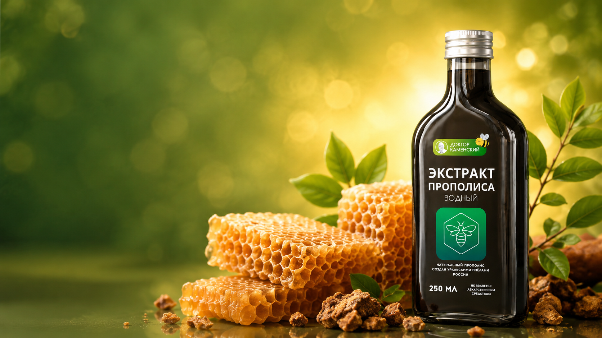

Крепкая основа
Понимание, как поддерживать организм натуральными средствами без резких обещаний.
Онлайн-курс
10 000 ₽ 999 ₽
Научитесь безопасно и осознанно изучать природную поддержку для иммунитета, энергии и ежедневного самочувствия без медицинских обещаний.
Что вы получите на курсе 🌿
Понимание, как поддерживать организм натуральными средствами без резких обещаний.
Разбор водного экстракта прополиса, правил осторожности и бытовых ограничений.
Короткая структура: от базовых свойств к практическим сценариям и вопросам.
Без замены лечения, сложного давления и обещаний результата вместо консультации врача.
Кому подойдет курс
Тем, кто заботится о своем здоровье и здоровье близких.
Тем, кто выбирает природные решения и хочет разобраться глубже.
Тем, кому нужны понятные схемы, вопросы к специалисту и ограничения.
Всем, кто хочет внимательнее относиться к себе без давления и обещаний.
Программа курса

Состав, свойства и почему продукт так полезен в натуральном оздоровлении.
Как его получают, чем он отличается и где нужна осторожность.

Разбор типичных ошибок, правил приема и важных ограничений.
Что включить в режим: энергия, горло, сезонная профилактика и вопросы.
Курс ведет врач
Врач-апитерапевт с 42-летним стажем в медицине и 30-летним опытом работы в области натуральной медицины. В курсе он делает акцент на практичном, спокойном и ответственном подходе.
Отзывы участников
14 мая 2026
Отличный экстракт, спасает от простуд и разных воспалений.
9 мая 2026
Замечательный концентрат, разбавляю 1 к 3 с водой. Употребляем всей семьёй.
3 мая 2026
Сразу почувствовала улучшение.
Запишитесь на курс сейчас, а после подключения получите доступ к урокам и материалам.

FAQ
Тем, кто интересуется натуральной поддержкой организма, апитерапией и хочет разобраться в применении водного экстракта прополиса под руководством специалиста.
После подключения доступа участник переходит на платформу GetCourse и изучает короткие уроки в удобном темпе.
Срок доступа нужно подтвердить перед публикацией. В demo-версии указан локальный формат без подключения оплаты.
Да, у пчелопродуктов могут быть ограничения. Перед применением любых средств важно проконсультироваться со специалистом, особенно при аллергии, хронических состояниях, беременности или лечении.
Нет. Курс носит информационно-образовательный характер и не заменяет диагностику, лечение и очную медицинскую консультацию.